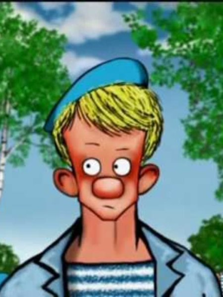

Досье №1: «Иван Степочкин»
РАССЕКРЕЧЕНО

Настоящее имя: Иван Степочкин
Возраст: примерно 20 лет
Особые приметы: всегда носит парашют
Статус: в розыске
Получил кличку за то, что ни один свидетель не слышал его голоса. Появлялся в городе поздно вечером и исчезал до приезда полиции.
Хронология дел
| Год | Место | Событие |
|---|---|---|
| 2008 | Старый военный склад | Первый пожар, первая кровь, улик не найдено |
| 2010 | Театр «Орфей» | Массовое истребление всех участников группы |
| 2012 | Мельница | Последнее известное дело засекречено |